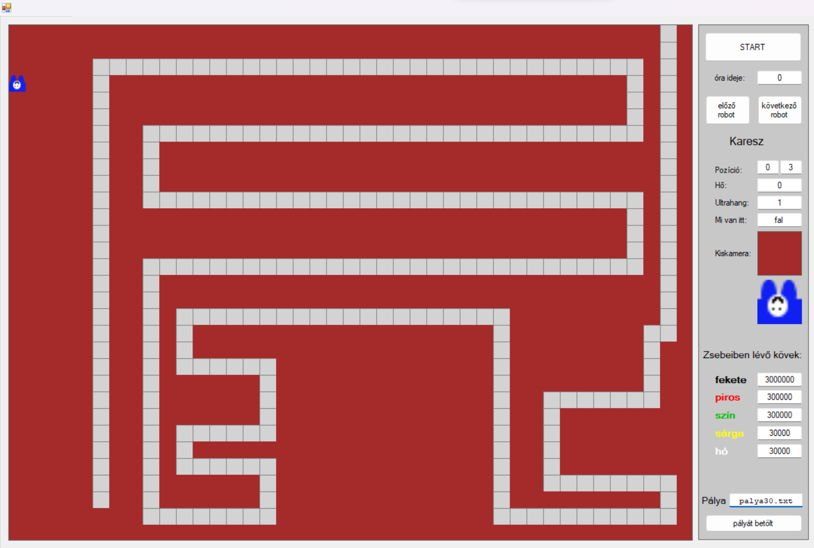

Ez pedig a nehezebb típus ahol vissza kell "forgatni" a függvényt önmagába
OOP Karesz

Karesz 30. pálya
A OPP Karesz feladatok lényege lehet pl. hogy Karesz kijusson, vagy esetleg felszedje a "kavicsokat", különböző pályák kiválasztásával változtathatjuk a kiutat, a falakat, és a alapból lent lévő kövek színét, elhelyezését, és méretét.